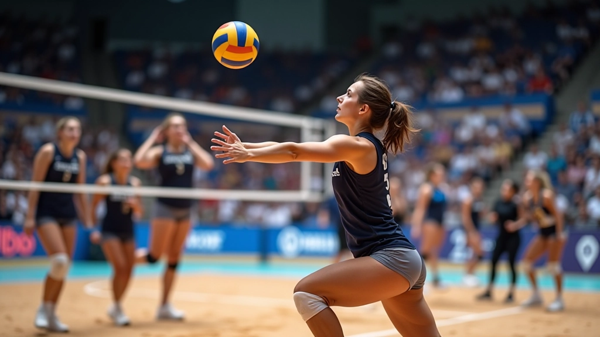
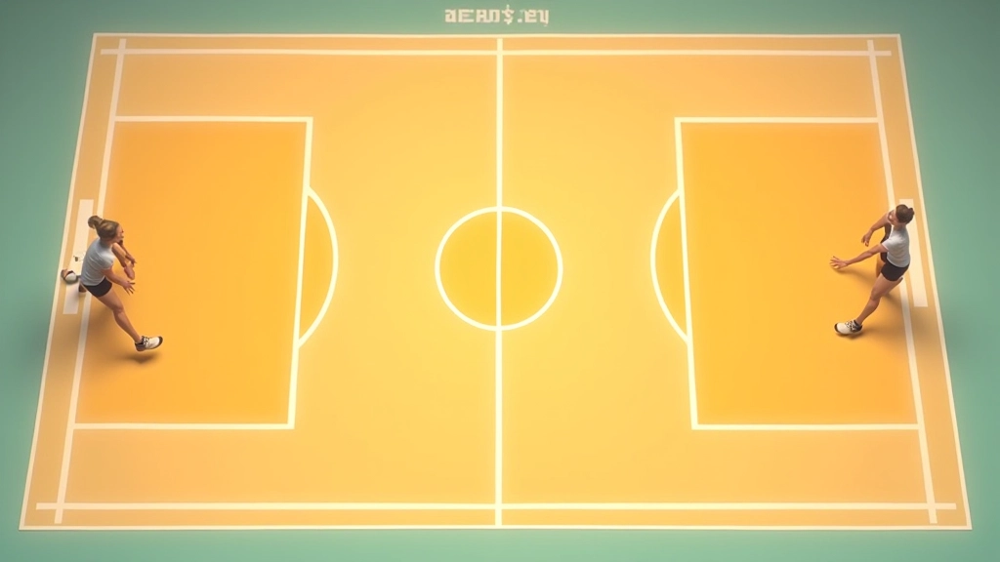
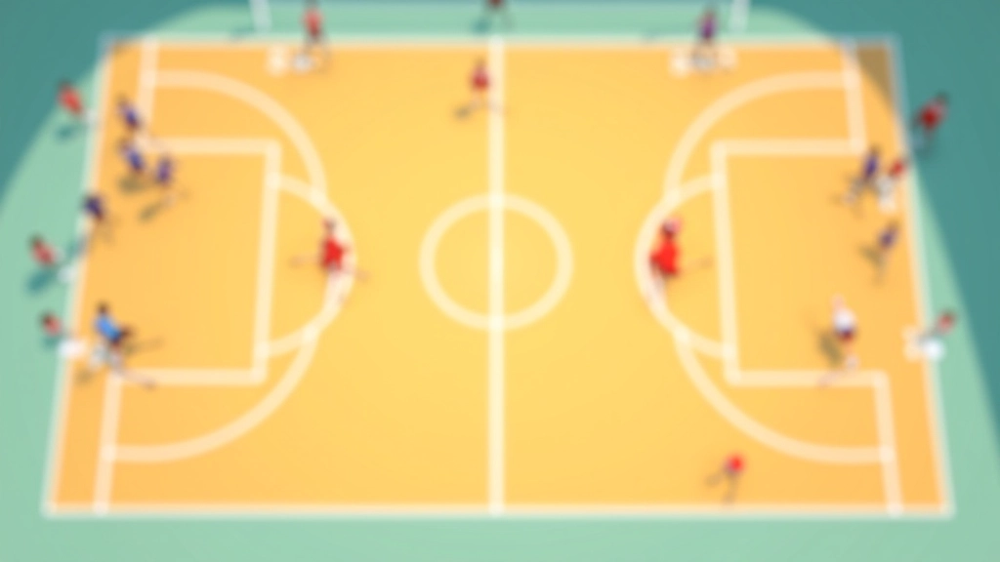
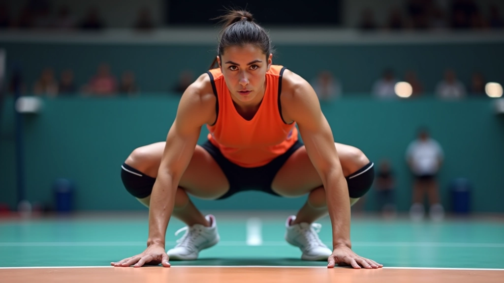
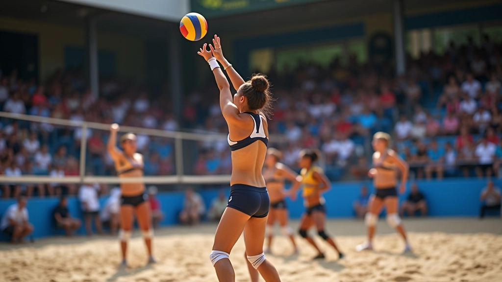
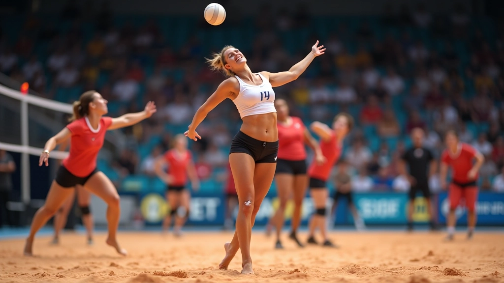

أساسيات الحركة والتمركز الدفاعي
تعلم كيفية اتخاذ المواقع الصحيحة في منطقة الدفاع وكيفية تحريك قدميك بكفاءة...
تطور مهاراتك في التوقع والقراءة من خلال فهم أنماط اللاعب وحركات المهاجم. ستتعلم كيف تتحرك قبل حتى تبدأ الكرة رحلتها.
قراءة اللعبة ليست مجرد ردة فعل سريعة — إنها مهارة يمكنك تطويرها من خلال الملاحظة والممارسة. عندما تقرأ اللعبة بشكل صحيح، ستجد نفسك في المكان الصحيح في الوقت المناسب. لا تنتظر الكرة لتخبرك أين تذهب، بل تتحرك قبلها. هذا ما يفصل بين اللاعب الجيد واللاعب الممتاز.
الليبرو الذي يتقن هذه المهارة يصبح مثل "رادار" الفريق الدفاعي. يستطيع توقع الهجمات من خلال فهم عمق الكرة وقوة المهاجم وموقع المجموعة المهاجمة. في هذا الدليل، ستتعلم كيفية تطوير هذه الحاسة السادسة في كرة الطائرة.
كل فريق له أنماط هجومية معينة. المهاجمون الأيمنون يميلون إلى ضرب الكرة بزوايا معينة. الهجمات من المنتصف تختلف تماماً عن الهجمات من الأطراف. وكل مهاجم له "توقيع" خاص به في طريقة الضرب.
عندما تبدأ بمراقبة هذه العناصر، ستلاحظ أنماطاً متكررة. مهاجمك المفضل قد يضرب دائماً بزاوية 45 درجة عندما تكون الكرة منخفضة. المهاجم الآخر قد يميل نحو الخط عندما يكون الدفاع منسحباً. استغل هذه المعلومات لتتحرك بذكاء.

حركة جسم المهاجم تخبرك الكثير قبل أن تترك الكرة يده. عندما يأخذ المهاجم خطوة للدخول، أنت تعرف أن هجمة قوية قادمة. عندما يتحرك الكتفان بزاوية معينة، تستطيع أن تتوقع اتجاه الضرب.
الموقف أيضاً مهم جداً. هل المهاجم يقف على قدم واحدة أم قدمين؟ هل يميل جسده للأمام أم للخلف؟ هل ذراعه حرة أم محاطة بالدفاع؟ كل هذه الأشياء تؤثر على نوع الهجمة التي سيلعبها. كن ملاحظاً نشطاً وليس مجرد متفرج ينتظر الكرة.
هذا الدليل يوفر معلومات تعليمية عن تطوير مهارات قراءة اللعبة. كل لاعب يتطور بسرعة مختلفة، والنتائج تعتمد على الممارسة المنتظمة والتفاني. يُنصح بالعمل مع مدرب متخصص لتطبيق هذه التقنيات بشكل صحيح.
بعد أن تقرأ نية المهاجم، يجب أن تتحرك بذكاء. لا تنتظر حتى تترك الكرة يد المهاجم. ابدأ حركتك قبل اللحظة الحاسمة. إذا كنت تتوقع هجمة قوية نحو الخط، تحرك باتجاه الخط قبل الضرب. إذا كنت تتوقع كرة قصيرة، اخطو للأمام بسرعة.
التموضع المبكر يعطيك الوقت لتصحيح حركتك إذا أخطأت في قراءة اللعبة. كما يسمح لك بأخذ خطوة أو خطوتين للاستعداد للاستقبال بدلاً من الانطلاق من موقف ثابت. هذا الفارق البسيط — خطوة واحدة إضافية — يعني الفرق بين استقبال قوي وكرة ضائعة.

اجلس على الملعب وراقب المهاجمين. ركز على حركات معينة قبل كل ضرب. سجل الأنماط التي تلاحظها. هذا التمرين يساعدك على تطوير "ذاكرة عضلية" لقراءة الأنماط.
أثناء التدريب، حاول التنبؤ بمكان هبوط الكرة قبل أن يضربها المهاجم. قل لنفسك "يمين"، "خط"، أو "منتصف" قبل الضرب. مع الوقت، ستصبح تنبؤاتك أكثر دقة.
ركز على أخذ خطوة تجاه المنطقة المتوقعة قبل الضرب. الهدف ليس الوصول إلى كل كرة، بل التحرك بسرعة واتجاه صحيح. حسّن وقتك مع كل تكرار.
شاهد تسجيلات لمباريات أو تدريبات. لاحظ أنماط المهاجمين المختلفين. اكتب ملاحظاتك عن كل مهاجم. هذا التحليل يساعدك على فهم أعمق للعبة.
تابع نظر المهاجم وتحركات عينيه قبل الضرب. المهاجمون الجيدون يبحثون عن مناطق ضعيفة. إذا كنت تراقب نظره، تستطيع أن تتوقع أين يريد ضرب الكرة.
لا تقف بشكل سلبي أبداً. حافظ على قدميك متحركة بخفة طوال الوقت. هذا يسمح لك بالانطلاق بسرعة في أي اتجاه عندما تقرأ الهجمة.

قراءة اللعبة والتنبؤ بالهجمات هي مهارة تحتاج إلى وقت وصبر لتطويرها. لا تتوقع أن تصبح خبيراً في أسبوع واحد. ركز على مراقبة نمط واحد في كل تدريب. مع مرور الوقت، ستصبح هذه المهارات طبيعية تماماً.
تذكر أن أفضل لاعبي ليبرو في العالم لم يصبحوا بارعين لأنهم سريعون فقط — لكن لأنهم قرأوا اللعبة بذكاء. أنت تستطيع أن تفعل الشيء نفسه. ابدأ من اليوم، وراقب، وتعلم، وتحسّن.

كتبه
فريق التحرير والمراجعة
فريق دفاع الليبرو التحريري متخصص في توفير إرشادات عملية وموثوقة لتطوير المهارات الدفاعية في كرة الطائرة. نركز على المحتوى الذي يساعد اللاعبين والمدربين على تحسين أدائهم.

تعلم كيفية اتخاذ المواقع الصحيحة في منطقة الدفاع وكيفية تحريك قدميك بكفاءة...

اتقن فن استقبال الكرات الصعبة والمنخفضة والسريعة. يتضمن هذا الدليل تدريبات...

استكشف الأنماط التكتيكية المختلفة والتغطية الدفاعية التي يستخدمها الفريق...